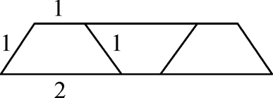
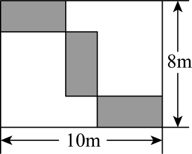
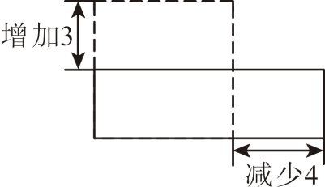

专题03 一元一次方程的构造（举一反三专项训练）
【北师大版2024】

【题型1 根据一元一次方程的定义构造】 1
【题型2 根据同类项的概念构造】 1
【题型3 根据相反数、倒数的性质构造】 2
【题型4 根据一元一次方程解的定义构造】 2
【题型5 根据一元一次方程解的情况构造】 2
【题型6 巧设辅助未知数构造】 3
【题型7 根据图形之间的等量关系构造】 3
【题型8 根据新定义构造】 4

【题型1 根据一元一次方程的定义构造】
【例1】（24-25七年级上·湖南株洲·期末）方程a+2x2+5xm−3−2=3是一元一次方程，则am的值为（ ）
A．8 B．−8 C．−16 D．16
【变式1-1】（24-25七年级下·吉林长春·期末）已知xk−2+3=5是关于x的一元一次方程，则k= ．
【变式1-2】若(m+5)x2+6mx+4m=0是关于x的一元一次方程，则m= ．
【变式1-3】关于x的方程(k−2)x2+(k−2)x=1是一元一次方程，方程的解为 ．
【题型2 根据同类项的概念构造】
【例2】（24-25七年级上·陕西渭南·期末）若单项式−xyb+1与12xa−2y3是同类项，则(a−b)3的值为（ ）
A．1 B．0 C．−1 D．−27
【变式2-1】（24-25七年级上·全国·期末）若单项式−12x2m−1y的次数是4，则m的值是（ ）
A．32 B．12 C．3 D．2
【变式2-2】（24-25七年级上·河南驻马店·期末）多项式x2−3mxy−6y2+12xy合并同类项后不含xy项，则m= ．
【变式2-3】（24-25七年级上·全国·期末）若单项式13am+1b与−2a3bn的和仍是单项式，则方程x−7n−1+xm=1的解为 ．
【题型3 根据相反数、倒数的性质构造】
【例3】当x取何值时，代数式1−x2与6−x4的值互为相反数（ ）
A．103 B．−103 C．5 D．-5
【变式3-1】（24-25七年级上·福建龙岩·期末）若式子6x−2的值与14互为倒数，则x的值为（ ）
A．−1 B．1 C．13 D．−13
【变式3-2】已知1−x的绝对值是2，y−2与13互为倒数，则x−y的值为（ ）
A．−6 B．2 C．−6或−2 D．2或−2
【变式3-3】若a3+1与2a+12互为相反数，则a= ．
【题型4 根据一元一次方程解的定义构造】
【例4】（24-25七年级下·黑龙江绥化·期末）小明在解方程：3x+12−2x+m3=1去分母时，方程右边的1没有乘6，因而得到方程的解为x=−2，方程正确解为 ．
【变式4-1】（24-25七年级上·广东·期末）若x=5是关于x的方程ax−8=20+a的解，则a的值为
【变式4-2】某书中一道方程题2+⊕x3+1=x，⊕处印刷时被墨盖住了，查后面答案，这道题的解为x=−25，那么⊕处的数字为 ．
【变式4-3】（已知关于x的方程x−m2=x+m3与方程x−12=3x−2的解互为倒数，则m的值为 ．
【题型5 根据一元一次方程解的情况构造】
【例5】如果a，b为定值时，关于x的方程3kx+a2−x+bk4=1，它的根总是2，则a+b的值为（ ）
A．18 B．15 C．12 D．10
【变式5-1】（24-25七年级上·全国·期末）已知关于x的一元一次方程x2024+6=2024x+m的解为x=2024，则关于y的一元一次方程5−y2024−6=20245−y−m的解是 ．
【变式5-2】（24-25七年级下·重庆·期中）若关于x的方程m3x+1=−n2+x3有无数个解，则m+n的值为 ．
【变式5-3】（24-25七年级上·江苏南通·期末）若关于x的一元一次方程ax−12025+b=2x+c−22025的解为x=1，则关于y的一元一次方程ay+b=2y+c的解为y= ．
【题型6 巧设辅助未知数构造】
【例6】观察图和所给表格回答：当图形的周长为80时，梯形的个数为（ ）
梯形个数 | 1 | 2 | 3 | 4 | 5 | … |
图形周长 | 5 | 8 | 11 | 14 | 17 | … |

A．25 B．26 C．27 D．28
【变式6-1】（24-25七年级下·全国·随堂练习）某长方形的周长是24，长和宽的差是4，则这个长方形的长和宽分别为______．
【变式6-2】（24-25六年级下·上海浦东新·期中）如图，一个圆剪拼成一个近似梯形，这个梯形的周长是28.56厘米，则圆的面积是 平方厘米．

【变式6-3】（25-26七年级上·浙江金华·自主招生）中国古代会把直角三角形的两条直角边叫做“勾、股”，把斜边叫做“弦”，已知有一个周长为48cm的直角三角形，它的勾：股：弦=3:4:5，那么它的股是 cm，弦上的高是 cm．
【题型7 根据图形之间的等量关系构造】
【例7】（24-25七年级上·吉林·期末）如果一个长方形内部能用一些正方形铺满，既不重叠，又无缝隙，就称它为“优美长方形”．如图所示，“优美长方形”ABCD的周长为78，则正方形a的边长为（ ）

A．15 B．9 C．6 D．3
【变式7-1】（24-25七年级下·山东德州·期末）如图，在长为10m，宽为8m的长方形空地中，沿平行于长方形各边的方向分割出三个完全相同的小长方形花圃（阴影部分），则小长方形花圃的长和宽分别是（ ）

A．4m，2m B．2m，4m C．3m，2m D．4m，3m
【变式7-2】如图，一个长方形的周长为26，如果这个长方形的长减少4，宽增加3，就可围成一个正方形，那么这个长方形的长和宽分别为（ ）

A．11，2 B．10，3 C．8，5 D．7，6
【变式7-3】如图所示，，已知长方形ABCD的长AD=12，宽AB=9，内有边长相等的小正方形AIGJ和小正方形ELCK，其重叠部分为长方形EFGH．若长方形EFGH的周长为14，正方形ELCK的面积为（ ）

A．156 B．144 C．81 D．49
【题型8 根据新定义构造】
【例8】（24-25七年级下·湖南衡阳·期末）定义新运算“A↔B”，规定当A≥B时，A↔B=A3+B；当A<B时，A↔B=B2−A．例如：3↔1=33+1=2，−2↔1=12−−2=2.5．如果6x−3↔2x+1=8，那么x的值为 ．
【变式8-1】阅读理解：a,b,c,d是有理数，我们把符号abcd称为2×2阶行列式，并且规定：abcd=ad−bc，则满足等式x2x+1321=1的x的值是 ．
【变式8-2】（24-25七年级下·内蒙古乌海·期末）新定义阅读理解题
如果两个一元一次方程的解互为相反数，我们就称这两个方程为“兄弟方程”．如方程2x=4和3x+6=0为“兄弟方程”．
(1)若关于x的方程4x+m=0与方程3x−3=x+1是“兄弟方程”，求m的值；
(2)若两个“兄弟方程”的两个解的差为6，其中一个解为n，求n的值．
【变式8-3】已知关于x的一元一次方程ax+b＝0（其中a≠0，a、b为常数），若这个方程的解恰好为x＝a﹣b，则称这个方程为“恰解方程”，例如：方程2x+4＝0的解为x＝﹣2，恰好为x＝2﹣4，则方程2x+4＝0为“恰解方程”．
(1)已知关于x的一元一次方程3x+k＝0是“恰解方程”，则k的值为 ；
(2)已知关于x的一元一次方程﹣2x＝mn+n是“恰解方程”，且解为x＝n（n≠0）．求m，n的值；
(3)已知关于x的一元一次方程3x＝mn+n是“恰解方程”．求代数式3（mn+2m2﹣n）﹣（6m2+mn）+5n的值．